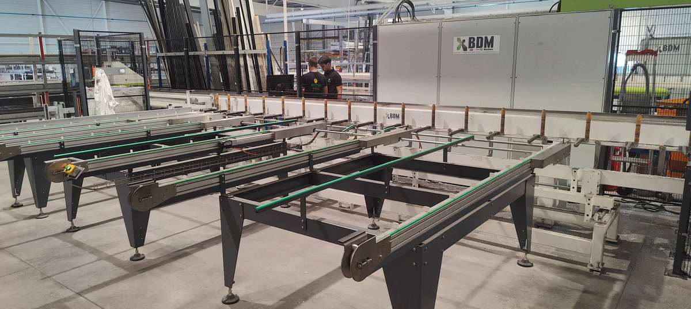
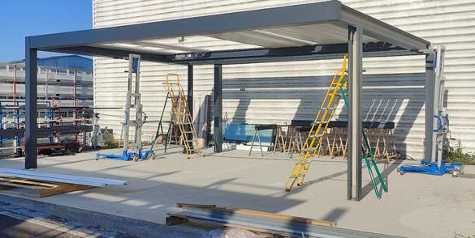
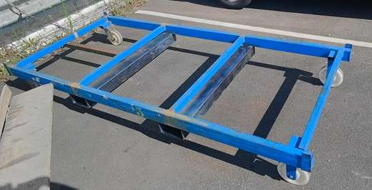

Stage technicien automatisme — du 26 mai au 11 juillet 2025
Programmation du CDU pour la nouvelle pergola BIOV2
7 semaines au service méthodes d'Akena Vérandas, fabricant n°1 de vérandas en France : programmation d'un centre de découpe usinage pour la nouvelle gamme de pergolas BIOV2, et quelques projets d'amélioration en atelier.

Mission
Programmer les usinages, perçages et découpes des profils aluminium de la pergola BIOV2 sur le CDU 2 (centre découpe usinage)
Résultat
✅ Prototype BIOV2 usiné, contrôlé et assemblé — référence pour la formation des poseurs
Compétences mobilisées
Logiciel DUBUS, lecture de plans, contrôle qualité, conception SolidWorks, robotisation
Contexte & mission
Akena Vérandas développait au moment de mon arrivée une nouvelle gamme de pergolas bioclimatiques, BIOV2. Le bureau d'études avait déjà finalisé les profils sur SolidWorks ; ma mission, au sein du service méthodes, était de programmer leurs usinages sur le CDU 2 (centre découpe usinage) pour permettre la fabrication du prototype.
Un planning hebdomadaire de tâches m'était confié chaque lundi par le responsable de l'industrialisation, ce qui m'a permis de travailler en autonomie tout en gardant un cap clair sur l'avancement du projet.
Ce que j'ai fait
Akena dispose de cinq CDU ; le CDU 2, piloté par le logiciel DUBUS, a été dédié au projet BIOV2. Après une formation au logiciel — qui demande beaucoup de rigueur, la moindre erreur pouvant compromettre un usinage ou la machine elle-même — j'ai programmé chaque profil à partir des plans techniques du bureau d'études, en renseignant les positions d'usinage (X, Y, Z) et le foret adapté.
- Programmation des usinages sur le logiciel DUBUS, à partir des plans du bureau d'études
- Écriture des fichiers lot exécutés par la machine pour chaque profil
- Tests sur le CDU 2 et contrôle dimensionnel (X, Y, Z) au pied à coulisse après chaque passage
- Ajustements en cas d'écart, jusqu'à validation de tous les profils
- Transmission des profils validés au bureau d'études pour l'assemblage du prototype


Têtes d'usinage, de perçage et de découpe du CDU 2
Prototype BIOV2 assemblé sur site
Obstacle rencontré
Un capteur de la machine ne détectait pas les pièces de moins de 20 mm, alors que l'un des profils ne mesurait que 17 mm. J'ai travaillé avec l'équipe maintenance pour ajuster la position du capteur et poursuivre les essais.
Robotisation des chariots
En parallèle, j'ai pris en charge une demande d'amélioration remontée par les opérateurs : le transport des chariots de plaques se faisait manuellement à la sangle, un geste pénible pour le dos. J'ai proposé de réutiliser un robot tracteur inutilisé pour automatiser ce déplacement.
Après plusieurs conceptions sous SolidWorks présentées en réunion, j'ai équipé deux chariots de fourreaux et d'un timon de traction, en coordonnant l'intervention d'un soudeur et le suivi des délais fournisseur.

Chariot équipé, prêt pour le robot tracteur
Les délais fournisseurs se sont révélés bien plus longs que prévu — une bonne leçon sur l'importance d'intégrer ces aléas dès la planification.
Missions complémentaires
Chaque semaine, des tâches ponctuelles propres à un ingénieur méthode venaient compléter mon projet principal :
Marquage au sol
Sécurisation des zones de passage et de chaussures obligatoires sur les deux sites.
Installation Kanban
Montage de deux racks FIFO pour fluidifier l'approvisionnement des postes de production.
Gamme de montage
Rédaction de la gamme de montage de la centrale de commande de la pergola BIOV2.
Conditionnement & nomenclatures
Plans de conditionnement des profils BIOV2 et mise à jour des nomenclatures au format 2025.
Bilan
Compétences développées
- Programmation d'un centre de découpe usinage (logiciel DUBUS, fichiers lot)
- Lecture de plans techniques et contrôle dimensionnel au pied à coulisse
- Conception 3D sous SolidWorks et collaboration avec un fournisseur
- Autonomie, rigueur et communication avec techniciens et opérateurs
Ce stage m'a permis de me confronter aux responsabilités d'un ingénieur méthode et de découvrir concrètement sa place dans la chaîne de production.